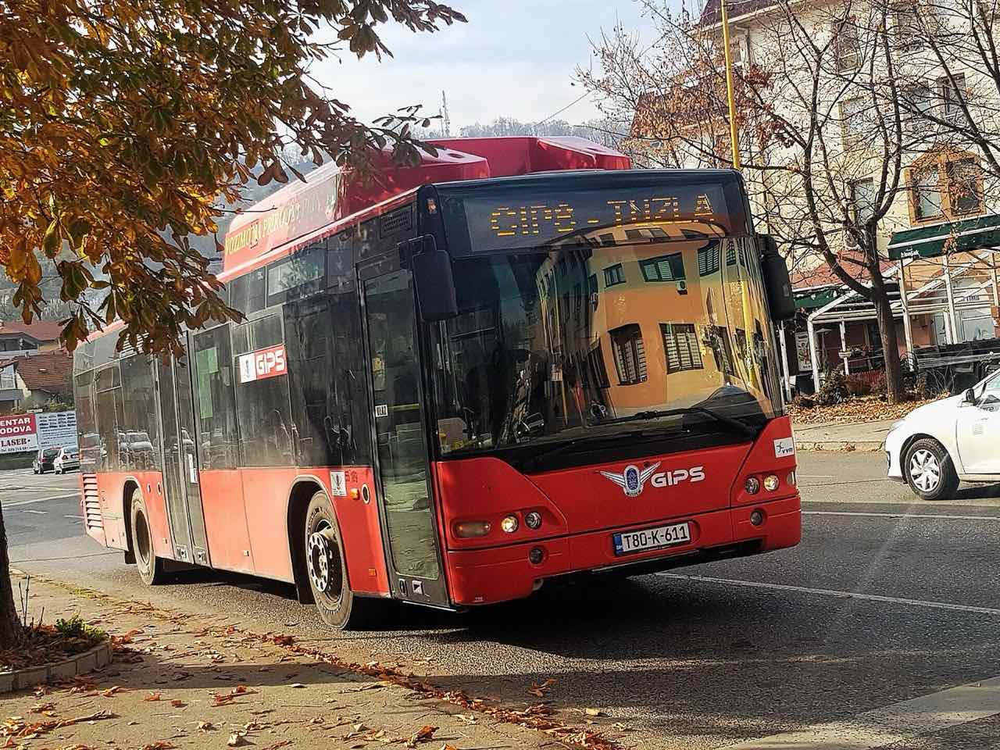

Sletjeli ste na aerodrom Tuzla i pitate se kako najbrže doći do smještaja? Ovaj vodič pokriva sve opcije prijevoza od aerodroma Tuzla do centra grada i apartmana, sa okvirnim cijenama, vremenom putovanja i praktičnim savjetima za miran dolazak. Aerodrom Tuzla je glavna ulazna tačka za posjetitelje sjeveroistočne Bosne i čest izbor dijaspore koja se vraća kući.
Aerodrom Tuzla: osnovne informacije
Međunarodni aerodrom Tuzla (oznaka TZL) smješten je u mjestu Dubrave, oko 8 km jugoistočno od centra grada. Glavni prijevoznik je Wizz Air, sa sezonskim i cjelogodišnjim linijama prema gradovima u Njemačkoj, Austriji, Švicarskoj, Švedskoj, Nizozemskoj i drugim zemljama u kojima živi velika bosanskohercegovačka dijaspora. Terminal je kompaktan, pa od slijetanja do izlaska obično prođe svega petnaestak minuta.
Kako doći od aerodroma Tuzla do apartmana
Postoje četiri provjerene opcije za dolazak od aerodroma Tuzla do centra grada i vašeg smještaja. Izbor ovisi o budžetu, satu dolaska i tome putujete li sami ili u grupi.
Taksi
Taksi vozila obično čekaju ispred terminala uz dolaske letova. Vožnja do centra Tuzle traje okvirno 15 minuta. Cijenu je najbolje dogovoriti ili provjeriti taksimetar prije polaska, jer se tarife mogu razlikovati. Taksi je najpraktičniji ako putujete sa prtljagom ili stižete kasno navečer.
Aerodromski autobus
Aerodromski autobus saobraća uz red letenja i povezuje terminal sa autobuskim terminalom u centru Tuzle. Ovo je najpovoljnija opcija, a karta se kupuje kod vozača ili na šalteru. Imajte na umu da autobus polazi u terminima usklađenim sa letovima, pa provjerite raspored ako stižete van glavne sezone.
Rent-a-car
Na aerodromu rade rent-a-car kompanije, a vozilo je pametno rezervisati unaprijed, posebno tokom ljeta. Iznajmljeni automobil ima smisla ako planirate izlete u okolinu, na primjer do tvrđave u Srebreniku ili Gradačcu. Za goste koji dolaze automobilom, Apartmani Elegance nude besplatan parking uz objekat.
Privatni transfer
Unaprijed dogovoreni privatni transfer znači da vas vozač čeka sa imenom na tabli, što je najugodnije nakon dugog leta. Ovu opciju vrijedi razmotriti za porodice i grupe, jer cijena podijeljena na više putnika često bude bliska taksiju.

Koliko traje put do Apartmani Elegance
Apartmani Elegance nalaze se na adresi Donji Mosnik 7, blizu centra grada i Panonskih jezera. Od aerodroma Tuzla do apartmana stiže se za okvirno 15 minuta vožnje, bez obzira da li birate taksi, rent-a-car ili privatni transfer. Lokacija u mirnom naselju Donji Mosnik znači da ste odmah blizu i jezera i gradskog jezgra. Više o samoj lokaciji pročitajte u našem vodiču o apartmanima blizu Panonskih jezera.
Savjeti za miran dolazak
Ako stižete kasnim letom, dogovorite preuzimanje ključeva i prijavu unaprijed kako biste izbjegli čekanje. Provjerite imate li lokalni novac za taksi ili autobus, jer se gotovina i dalje često koristi. Prije puta saznajte tačnu adresu i kontakt domaćina, a ako planirate razgledati grad, pripremili smo i vodič o tome šta posjetiti u Tuzli te prijedlog plana za vikend u Tuzli.
Gdje odsjesti blizu aerodroma i centra Tuzle
Za udoban dolazak i bazu blizu svega, preporučujemo Apartmani Elegance na adresi Donji Mosnik 7. Na raspolaganju su 4 savremeno opremljena apartmana, sa besplatnim parkingom, brzim Wi-Fi-em i direktnom rezervacijom bez provizije. Udaljenost od aerodroma je oko 15 minuta vožnje, a od Panonskih jezera samo 1,2 km. Rezervišite svoj termin i najavite sat dolaska, pa ćemo pripremiti prijavu na vrijeme.